|
CENTRAL CITY 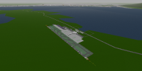 |
シーナリーのほぼ中央に位置する都市。 都市の規模も中くらい。 |
|
EASTON 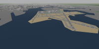 |
シーナリー東側にある大都市。 都市を流れる川には、多数の橋が架かっている。 |
|
GOLD CITY 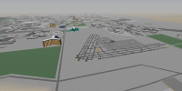 |
西部の砂漠に作られた都市。 多くのホテルとカジノで繁栄している。 |
|
LUCKY POINT 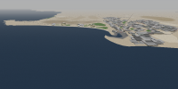 |
シーナリーの最も西部にある都市。 現在も開発が続くリゾート地。 |
|
MASIRO CITY 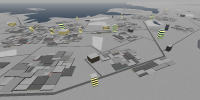 |
北部ホワイトランド最大の都市。 雪で真っ白です。 |
|
SAMUIDEN 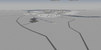 |
ホワイトランド西部の都市。 寒いでん。 |
|
PORT FAIRY 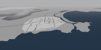 |
マシロシティーとサムイデンの中間に位置する港町。 |
|
GREAT CANYON 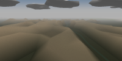 |
巨大な渓谷地帯。 年に一度大規模なエアレース大会が開かれる。 |
|
GREEN CITY 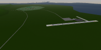 |
元は砂漠にあった都市だが、過去の戦乱によって廃墟と化してしまった。 残った住民は対岸へ移住し新たに街を築いた。しかし…。 |
|
SILENT HILL 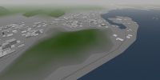 |
なんかいろいろ変なものが。 |
|
FORGOTTEN AIRPORT 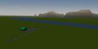 |
シーナリー開発初期にはテスト飛行用として、 また動画撮影の拠点としても使われたが いつの間にか作者にすらその存在を忘れられた飛行場。 |